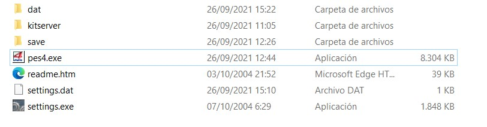
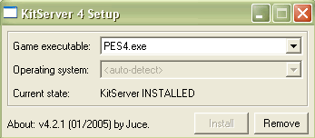

KitServer 4 is an "add-on" program for Pro Evolution Soccer 4 (PC) and Winning Eleven 8 International (PC). It enhances the "Strip Selection" menu of the game by allowing to select additional uniforms for Home and Away teams (for players and goalkeepers), and a game ball from an external list of "extra" balls. Configurable hot-keys are used to trigger selections.
This makes it easy to use "3rd" a.k.a. "alternative" a.k.a. "European" or "Champions League" (or whatever you want to call them) kits for specific matches, without having to edit the AFS-file and the executable. Also, sometimes, teams use different shorts or socks with standard colored shirts. This too is easily done with KitServer: all you have to do is just add extra uniforms with new combinations.
KitServer can also replace default kits (players and goalkeepers): player 1st strip, player 2nd strip, goalkeeper 1st, goalkeeper 2nd.
Another usage for KitServer is testing of new kits/balls.which network server to connect to and automatic roster updates.
PES4 PC 1.0, PES4 PC 1.10, WE8I PC PES4 PC Demo, PES4 PC Demo 2. ("3rd"-kit selector and ball selector are not implemented in demos)
(Note: the following instructions use PES4 as an example, but the same applies to WE8, with "WE8.exe" used instead of "PES4.exe", and etc.)
STEP 1. Copy the entire "kitserver" folder into your PES4 PC folder. So that you directory structure looks like this:
STEP 2. Go to "kitserver" folder, and run setup.exe. If STEP 1 was done correctly, you should see your "PES4.exe" in the dropdown list. If KitServer hasn't been already installed for this executable, the "Install" button should become enabled. Press "Install" button. The installation should happen pretty quickly - in a matter of seconds. Once, it is complete, the popup window will display "SUCCESS!" message, or report an error if one occured.
If an error occurs, check if your PES4.exe is not currently in use (i.e. exit the game, if it is currently running). Also, check that PES4.exe is not marked as read-only file.
To uninstall KitServer, launch the setup.exe again, select PES4.exe, and press "Remove" button. After that, you can safely delete the whole "kitserver" folder, if you want.
The kits database ("KDB") has a folder "uni", which is where you place additional folders. Each folder corresponds to a certain team, and must be named accordingly: for England, you need to create folder called "006", for Newcastle - "078", for FC Barcelona - it would be "165". Place your kits in those folders, with these special names:
texga.bmp - will be used instead of GK 1st kit. texgb.bmp - will be used instead of GK 2nd kit. texpa.bmp - will be used instead of PLAYER 1st kit. texpb.bmp - will be used instead of PLAYER 2nd kit. gloves.bmp - will be used instead of GK gloves
Extra kits go to specially named folders: "gx" - goalkeeper kits "px" - player kits
In those folders, BMP files can be named arbitrarily. For example: arsenal_third.bmp
When using extra kits, you will usually need to define one or more of the following kit attributes: color of player's name on the shirt, color of player's number on the shirt, color of player's number on shorts, collar of the shirt, 3D-model of the shirt. (Example: for an "all-white" Holland kit, you will need to define that numbers on shirt and shorts, as well as name on the back of the shirt - all need to be orange.) All these attributes can be set in "attrib.cfg" file, which should be placed into corresponding team's folder. For instance, for Holland, the attrib.cfg will go into KDB/uni/015 folder. The format of attrib.cfg file is simple. It consists of sections, where each section describes one kit. A section has a header, which identifies which file contains the kit. Like this: [px/arsenal_third.bmp] The header is followed by kit attribute definitions. Attribute definition has the following format: attribute = value (Spaces on both sides of the "=" are important.) The attrib.cfg file may also contain comments, which are solely for user's convenience, and are ignored by KitServer. Comment starts with a "#" character and continues until the end of line.
Here's the summary table of all the supported attributes:
| Attribute name | Meaning | Format | Example |
|---|---|---|---|
| shirt.name | takes a value that defines color of player's name on the back of a shirt | RRGGBB | RRGGBBAA | |
| shirt.number | Defines color of the player's number on the back of the shirt (and on the front of the shirt - for national teams). | RRGGBB | RRGGBBAA | |
| shorts.number | defines color of the player's number on shorts | RRGGBB | RRGGBBAA | |
| collar | Defines whether the shirt has a collar or not. Note that not all shirt models support collars, so even if you specify this attribute as "yes", it's not guaranteed that the shirt will appear with collar, unless you also specify a 3D-model that supports collars. | yes | no | |
| cuff | Defines how the edges of long sleeves look. If set to "yes" the sleeves will have cuffs, otherwise they will be just plain straight sleeves. Note that some models may override this setting and force special-looking cuffs. | yes | no | |
| model | Specifies which 3D-model should be used with this kit. This attribute
is only supported for player kits - not goalkeepers. Goalkeepers and
players of the same team share the same 3D-model (that appears to be
the limitation set by the game itself).
The value is a decimal number, specifying the 3D-model id.
Hint: one way to learn about different 3D-models is to use Waterloo's
tool ("WE Set Default Colour" v3.2.0) - it has explanation about almost
any shirt model used in the game. Another way: visit Ajay's excellent
site ( history.txt ) - it has an article about models with explanations and screenshots. (The site was taken down, site recompile from archive.org) |
decimal integer (min = 0, max = 69) | |
| shorts.number.location | Specifies where should the number appear on the shorts | off | left | right | both | |
| name.shape | This allows to specify whether the name should have a curved shape, or be straight. | straight | curved | |
| number.type | Specifies which number type (from etc_ee_tex.bin) should be used with this kit. | 0 | 1 | 2 | 3 | |
| name.type |
Specifies which name font (from etc_ee_tex.bin) should be used with this kit. | 0 | 1 |
EXAMPLE of a section in attrib.cfg:
# Arsenal third "yellow" kit shirt.name = 000088 # dark blue shirt.number = 000088 # dark blue shorts.number = 888800 # yellow collar = yes cuff = yes model = 4 shorts.number.location = left number.type = 2 name.type = 0 # standard type name.shape = straight
You can use pretty much any PES4 kit in 512x256 BMP format.
(Which is how all major kitmakers - Spark, kEL, biker_jim_uk, and others distribute the kits).
Many kits are already prepared with correct transparency.
(For example, kits from kitpacks done by Spark are like this.
Download them here: http://www.pespc-files.com)
If you downloaded such kit, you don't need to do anything extra.
Otherwise, make sure you follow Step #2:
For that, you can use obocaman's WE/PES Graphics Studio v04.04.24
(or later). In the right section ("Bitmap Info"), open your BMP, then
set all the colors to be opaque. After that, in palette, select the
color(s) that you need to be transparent (usually some bright green
or pink), and set its opacity to 0%. Save the kit, by right-clicking
on it, and choosing "Save As" menu item.
Inside KDB, there is also a folder called "balls". Place extra ball files into that directory. For each extra ball you must add a section in attrib.cfg file, like this:
[name of the ball] ball.model = "model.bin" ball.texture = "name of the ball.bmp"
where "name of the ball" is what will be displayed by KitServer as the ball's label; ball.model specifies which file contains the 3d-model of the ball, and ball.texture specifies the texture file.
For ball texture, you can either use BIN file (compressed texture) - which is how the ball textures are usually distributed by ball-makers. Or you can use a 256x256 8bit color BMP file (uncompressed texture). This feature is something that may be useful to ball-makers as a quick-test tool for tweaking the ball texture.
To select extra kits or balls, you will need to press "hot-keys" on keyboard. Defaults are:
"1" - switches home player kit "2" - switches away player kit "3" - switches home goalkeeper kit "4" - switches away goalkeeper kit "V" - selects previous extra ball "B" - selects next extra ball "R" - selects random extra ball "C" - resets ball selection back to "game choice".
The keys are defined in kserv.cfg file, which is a simple text file that can be either modified manually (in Notepad, for example), or you can use a GUI program: kctrl.exe. Using kctrl.exe allows for easy re-mapping of hot-keys, but some (advanced) options cannot be modified with kctrl.exe. For example, to change the value of "kit.useLargeTexture" you will need to manually edit kserv.cfg.
While PES4/WE8I support widescreen modes (depending on the video card), the aspect ratio is always fixed at 4:3. On newer LCD monitors, which are almost always widescreen with 16:10 proportions or 16:9, the players look too fat, and the ball isn't round. This can now be corrected by using a kserv.cfg option called "aspect.ratio". You can set it to whatever value you want: to calculate it, just divide the width of your screen by the height of your screen. For non-widescreen monitors, it would be for example 640/480 = 1.3333. For a widescreen resolution like 1280x800, you'd have: 1280/800 = 1.6. Example setting in kserv.cfg:
aspect.ratio = 1.6000
Keep in mind that you can also play on lower resolutions, but with correct aspect ratio. For example, say you have a widescreen monitor, but can only play on 640x480, because that's what you get the best performance with. In a window mode, you wouldn't want to alter aspect ratio, but if you play in fullscreen, set it to 1.6 and enjoy correct proportions of the players and the round ball :)
You can also alter the game speed now, if say your game runs too fast, or too slow for your liking. It is done with "game.speed" option in kserv.cfg file. The value of 1.0 gives the normal, unmodified speed. With values smaller than 1.0, you get a slower game, for bigger than 1.0 - faster. Example setting in kserv.cfg:
game.speed = 0.97
You can also alter the camera zoom now for some camera modes (WIDE, NORMAL), you can set this on your camerazoomer.cfg. Also you can fix the clipping effect that makes the crowd dissapear and add the stadium roof to render. Example setting in camerazoomer.cfg:
zoom = 1150
fix_stadium_clipping = 1
add_stadium_roof = 0
KitServer now includes a few more lines into kserv.cfg. This will allow to do some tweaks to the graphical engine of the game, such as Level-Of-Detail table adjustment.
open kserv.cfg to configure the LOD Mixer settings. Here's an example of how that looks:
lod.level.1 = 0
lod.level.2 = 1
lod.level.3 = 2
lod.level.4 = 3
lod.level.5 = 4
Possible values are:
0 - Very high-detail models, big (512x256) textures 1 - High-detail models, medium (256x128) textures 2 - Medium-detail models, medium (256x128) textures 3 - Low-detail models, small (128x64) textures 4 - very Low-detail models, small (128x64) textures
You can also alter the Master League Starting year now, you can set this on your ml.cfg. Example setting in ml.cfg:
ml.starting.year = 2022
Since version 4.4.0, two new sets of options are supported in kserv.cfg, which allow to enforce custom fullscreen resolution, and also set the so-called "internal" resolution of the game rendering engine.
Fullscreen settings are useful, if you have a nice new widescreen monitor, which the game does not recognize. In that situation, just set the resolution in kserv.cfg, like this: Example:
fullscreen.width = 2800 fullscreen.height = 1800
The other set of settings affect the internal resolution of the game engine. The way it works is something like this: the game renders the entire scene into a predefined off-screen buffer, and then resamples that buffer to the main window (or fullscreen). This off-screen buffer is what we need to modify if we wish to get perfect rendering, without zig-zag edges and so for. Default "High Quality" dimentions for that buffer are 1024x1024, which is not good enough, if you are playing on a high resolution (4k) screen. What you want to do, is set this internal resolution to at least the size of your window/fullscreen.
You can also try setting internal resolution to even higher values, if your videocard is good enough and supports such buffers. If that is the case, then you will be able to get even better, anti-aliased edges in the game!
Example:internal.resolution.width = 3072 internal.resolution.height = 2048
Sometimes, during Kitserver install, the "auto-detect" selection of operating system fails. This results in the following: the game crashes right at the beginning, when Kitserver is installed, and works fine, when Kitserver is not installed. Here is what you can try to fix this:
1. Start a command-prompt window (Start->Run->"cmd") Go to kitserver folder, and type in: setup -os 2. You should see the setup window with "Operating system" selector enabled. Press "Remove" button (if the button is enabled) - a message box saying that Kitserver was successfully uninstalled should appear. 3. From the drop-down list of operating systems, select the one that matches yours. 4. Press "Install" button (if the button is enabled) - a message box saying that Kitserver was successfully installed should appear. 5. Exit setup.
Programming: juce, marqisspes6
Internal resolution research: Kingsley813
Testing: Jim (biker_jim_uk), NamedHwi, Master Saborio, Master_Splinter, FootballerPOMAH, galaxy
Sample kits: (c)Spark, (c)kEL
Sample balls: (c)Spark
Nike Aerow ball 3D-model: Ariel Santarelli
Documentation:
English: juce, marqisspes6
Kitserver license can be see here: license.txt